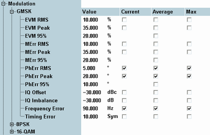

A poor modulation accuracy of the mobile transmitter increases the transmission errors in the uplink channel of the GSM network. The frequency error and the phase error are the critical quantities to assess the modulation accuracy of a GSM mobile phone.
- The frequency error, measured at various mobile transmitter output powers and frequencies, must not exceed 0.1 ppm (0.2 ppm for GSM 400).
- The RMS phase error, measured after adjustment for the frequency error and averaged over all samples in the useful part of the burst, must not exceed 5 deg.
- The peak phase error must not exceed 20 deg.
- At each channel and mobile output power, the measurement has to be repeated with a statistic count ≥ 20 deg.
- The frequency error must not exceed 0.1 ppm (0.2 ppm for GSM 400).
- The RMS EVM over the useful part of any burst of the signal must not exceed 9 % (7 %).
- The peak EVM must not exceed 30 %.
- The EVM 95th percentile must not exceed 15 %.
- The I/Q offset must be better than -30 dB.
The specified limits can be set in the configuration dialog, along with limits for the other measured quantities (for reference information refer to "Modulation").

The table below lists the test requirements of specification 3GPP TS 51.010-1.
Characteristics | Refer to 3GPP TS 51.010-1, section... | Specified limit |
|---|---|---|
Frequency error | 13.1 Frequency Error and Phase Error see also: 13.6, 13.16.1, 13.17.1 | < 0.2 ppm (GSM 400) < 0.1 ppm (all other GSM bands) |
Phase error | 13.1 Frequency Error and Phase Error see also: 13.6, 13.16.1 | RMS < 5 deg peak < 20 deg |
EVM error | 13.17.1 Frequency Error and Modulation Accuracy | RMS < 9 % (7 %) peak < 30 % percentile < 15 % |
I/Q offset | 13.17.1 Frequency Error and Modulation Accuracy | > -30 dB |